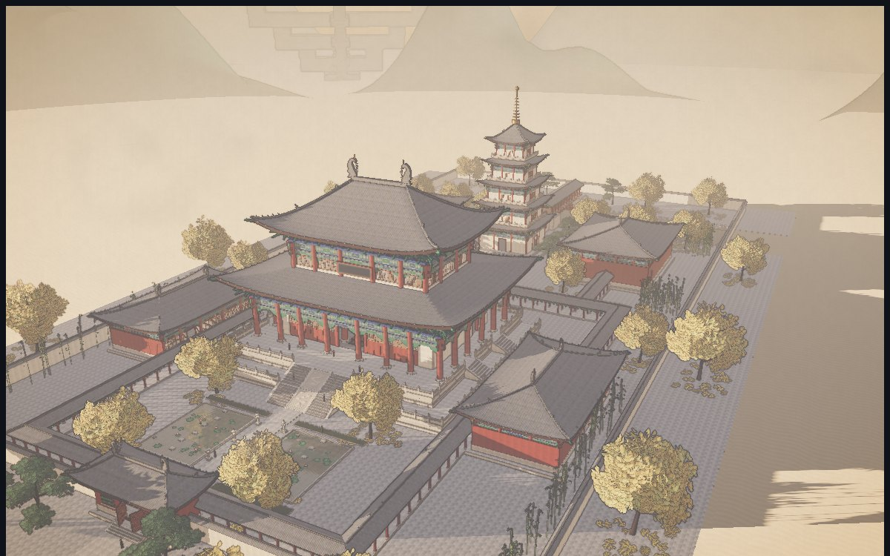
一座用官式木构语言搭起来的院落：建筑本身就是第一件展品。
馆里讲榫卯，馆的外观就用木构来做：柱、梁、斗拱、椽都按构件一件件搭出来，观众在进门之前已经在看木构。
采用传统的中轴院落。建筑分散成几座，尺度一级级变化，人在院子里走，一路看到不同的屋顶和檐口。
全院两个制高点：前院的重檐主殿取“阔”，北院的五层木塔取“高”，一横一竖，互为对景。
这是一座虚拟建筑，尺度按“看得清结构”来定，比真实可建的展馆偏大。
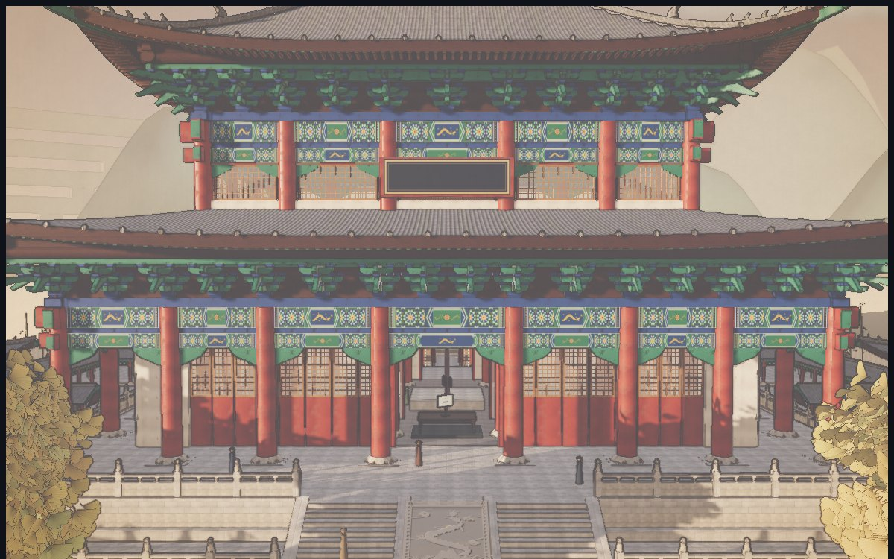
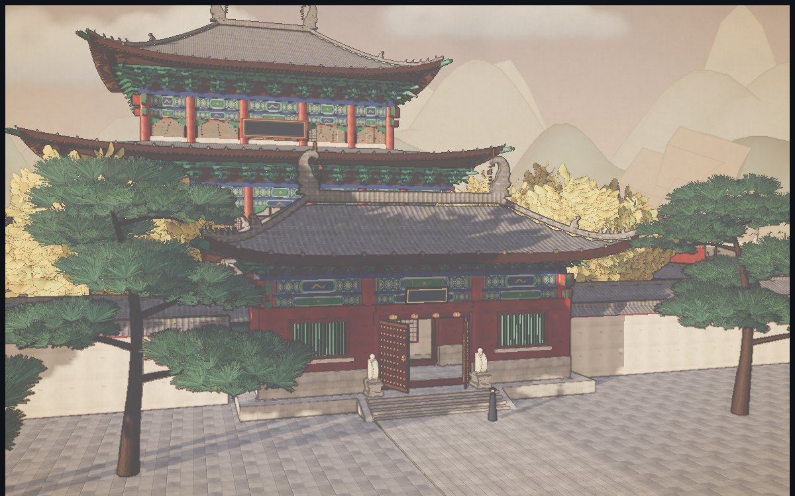
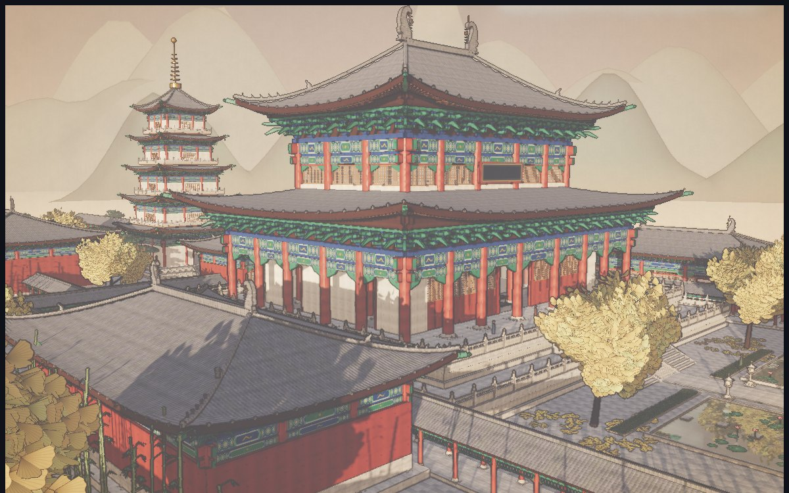
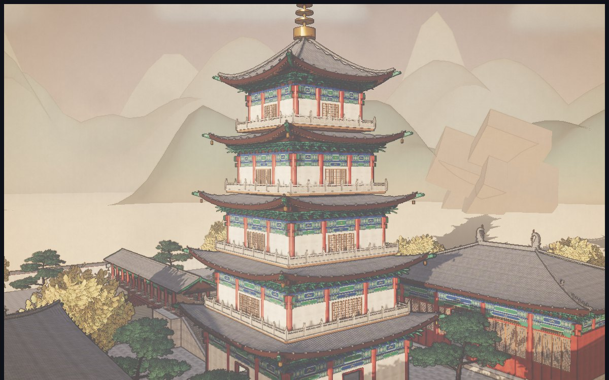
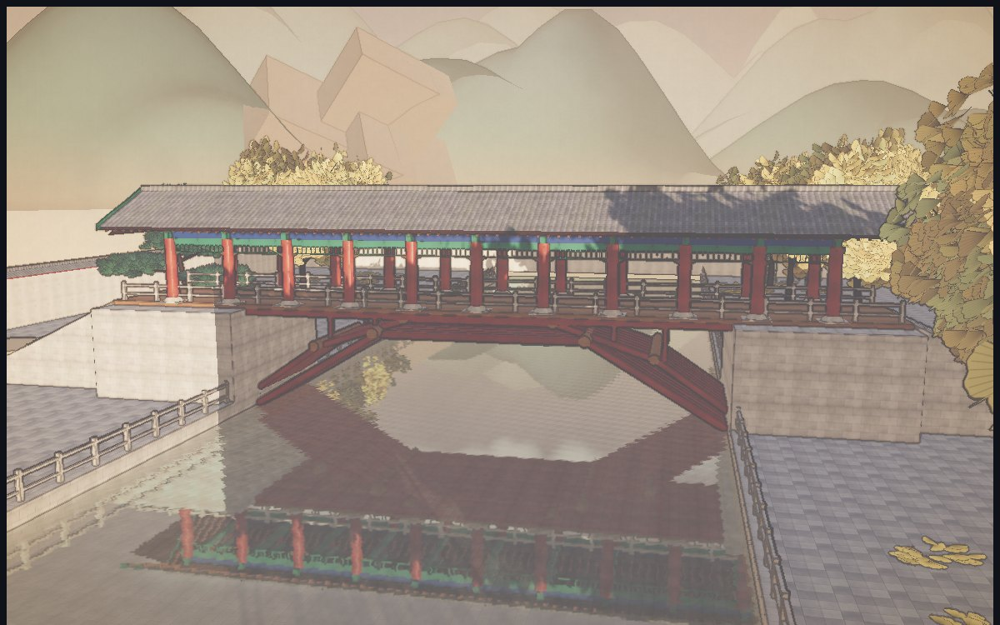
配殿、后殿、厢房都是单檐庑殿顶；回廊是五架梁的两坡顶，山面有博风和悬鱼。
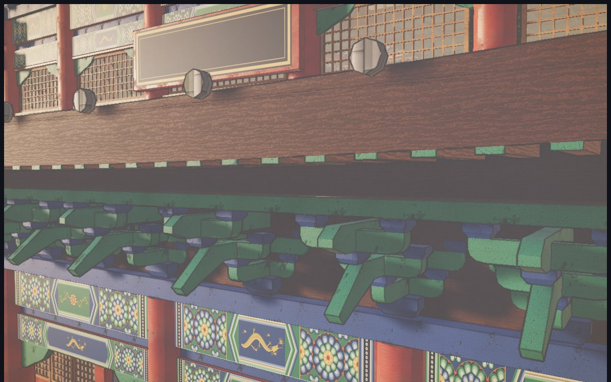
外观“像不像”主要看檐下。模型按清式做法的比例关系搭建，以斗口为模数：
| 部位 | 采用的比例 |
|---|---|
| 斗拱间距（攒当） | 11 斗口 |
| 平身科数量 | 明间 7 攒，次间 6 攒，梢间 5 攒 |
| 柱径 | 6 斗口 |
| 柱高 | 约 60–70 斗口 |
| 出檐 | 21 斗口，其中檐椽占三分之二，飞椽占三分之一 |
| 翼角 | 椽子从角柱向起翘的屋角呈扇形散开，角上有老角梁和套兽 |
这些比例来自二手资料对清式做法的整理，没有逐条对照原典。建筑是当代设计，借用官式的构造语言，不是对某一座古建的复原。
取官式建筑的配色：朱墙朱柱、青绿彩画、灰瓦、白石台基。额枋上是旋子彩画，青、绿两色隔间互换。
#9C3526殿身墙面#2C8A6F彩画、斗拱#2C529C彩画、额枋#D8A838彩画线、塔刹#787A7B屋面#6B4630椽、望板#F4F0E6台基、栏杆、院墙#D0A040秋树外观用到七套材质贴图，全部由程序生成，不使用外部素材。写实材质之上再叠一层墨线勾边。
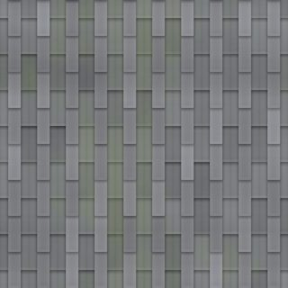
瓦屋面筒瓦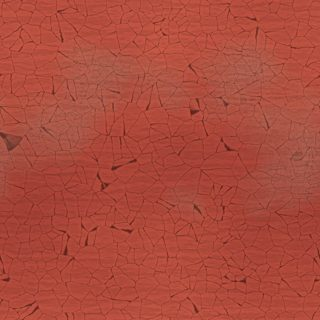
朱漆柱、门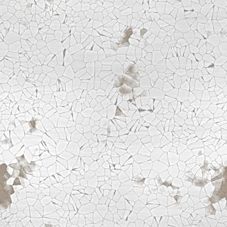
彩画底叠加青、绿、金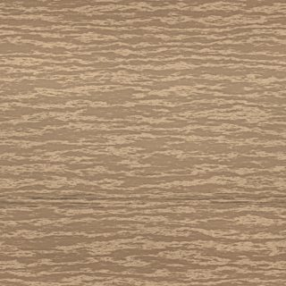
木椽、门窗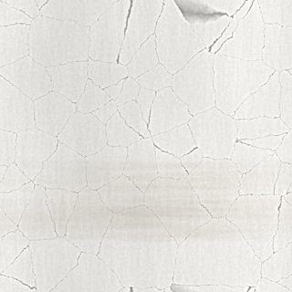
抹灰墙面，叠加朱色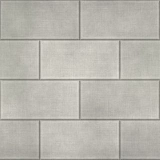
石台基、栏杆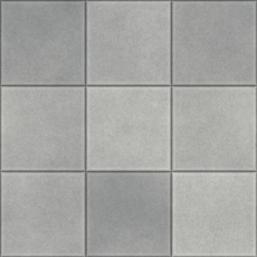
铺地院落石板时间定在黄昏。太阳高度角约 8°，暖色低斜光从西南照来，屋檐和树在地上拉出长影。
院内是银杏和松，前院两方水池种荷，北侧是运河。院外远处是青绿山水式的远山和云。
借工笔界画的画法：写实的材质和光影之上，用墨线勾出建筑的边，整体偏绢色。